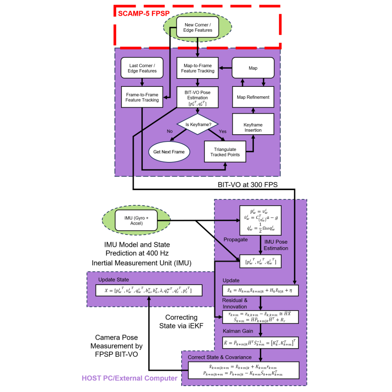

|
Education
UofT Robotics Institute, University of Toronto PhD, Doctor of Philosophy (Mechanical Engineering)
Robotics and Computer Vision Laboratory (RCVL) MASc, Master’s of Applied Science (Mechanical Engineering)
Physics, University of Toronto HBSc, Honours Bachelor of Science (Physics and Computer Science)
- Focus: Robotic Mechanics, Probability, TS-Analysis, Computational Physics
- Research: Time Series Analysis on Global Temperature, Sea Level Pressure
- Research: Helium-Neon Laser Analysis (Reviewed by Dr. A. Vutha)
- Research: Percolation via Random Processes Monte Carlo, Porous Rock
- Collaborated with: Dr. D. Jones of APCM Group
|
|
Publications/Works
Please find below a list of my select publications/works (in progress and by importance of work):
Forthcoming Contributions:
- TCB-VIO: Tightly-Coupled Focal-Plane Binary-Feature Visual Inertial Odometry (In Progress)
- AnalogPedestrianNet: High Framerate Focal-Plane Sensor-Processor Pedestrian Tracking (In Progress)
Peer Reviewed Contributions:
|
|

|
[1] Focal-Plane Sensor-Processor-Based Visual Inertial Odometry
Matthew Lisondra*1,
(1University of Toronto)
Thesis, 2024
bibtex
/
PDF
Studied the usability and advantages of FPSPs to leverage a more accurate state estimation framework
Designed an algorithm for VIO using Focal-Plane Binary Features
Implemented the FPSP vision- IMU-fused estimation algorithm on a mobile device for offline and online real-world testing
Evaluate the performance, benchmarking against FPSP vision-alone and ground-truth data
Extensive study on the algorithmic execution timing/frame, accuracy, memory usage
and power consumption of the visual front-end processing performance on the FPSP
|
|
{kind=link}